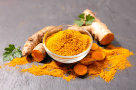

Как выбрать нужные специи? Мы очень часто бездумно хватаем пакетики молотых специй с прилавков магазинов, не обращая внимание на то, что они могут быть выдохшимися. Дело в том, что у специй очень большой срок хранения, и они могут лежать на прилавках долгое время, дожидаясь, пока кто-нибудь их все-таки купит. Мы советуем... 02.07.2018
 Что говорят ученые? Ученые утверждают, что клетки мозга значительно лучше переживают вредные воздействия благодаря веществу под названием "куркумин", которое содержится во многих растениях семейства имбирных и входит в состав приправы "карри". 02.03.2018
Что бы такое съесть, чтобы похудеть? Для тех, кто боялся съесть булочку с корицей, чтобы не набрать лишние граммы, есть хорошая новость, так как ученые выяснили, что именно эта приправа способствует борьбе с лишним весом. 01.28.2018
Король пряностей Перец называют королем пряностей. Нет ни одной страны мира, где бы его не добавляли в пищу. 01.20.2018